Group project
6 min read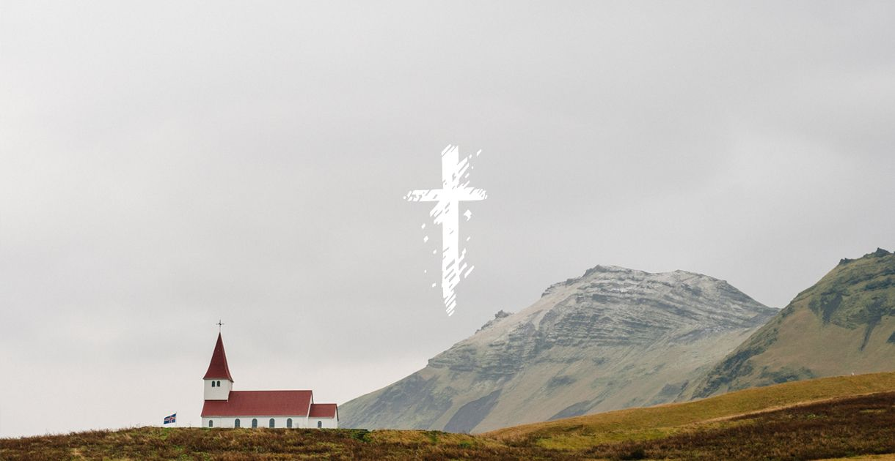
How do you capture a family of churches into a single recognisable brand identity? That was the question we had to ask ourselves for this project. The biggest church already had a website, but it was dated in terms of design and technology. Our client was very open to everything we came up with, but he liked the idea of a clean layout with big pictures. We worked from that and our impression of the churches.
The churches needed an online presence; a hub of history and information.
Identity and target
Pure, open, clean, bright, holy, saintly were all words we wanted associated with the outcome. The churches had two different audiences, primarily youth for StMary’s church and an older congregation for StSwithun’s church.
StSwithun’s church is older and features a richer history than StMary’s church. This is something we wanted to capitalise upon, and decided to feature rich history on this particular site. The target audience age is important for both churches, making legibility and general accessibility a great concern for both sites (what?).
StMary’s church is primarily used by a younger congregation and their parents. They feature youth groups and activities along with important history and events. We had to outline both of these, and decided to fit this on two pages, instead of just one.
Accessibility
With a older congregation, accessibility and legibility was key for us and our users. We kept our text at a readable 16px for body text and 32px for headlines. This offers a perceived text size of a physical book. The lighter greys used for the copy hold a contrast ratio of 7.3 to the background, passing the AAA contrast level for any font size. It can be argued that we shouldn’t be using pixel values for font-sizes, but we opted for this to have complete control over our text.
We also made sure our link areas were accessable from a touch device without troubles, as well as offering keyboard support for navigating the site by focusing on semantic markup.
Typography
Trajan Pro was the requested font for the websites. This was however a paid font if we were to use it legally. The font choice has been put on hold until the client approves the cost. At the time of writing, we are using the fall-back font, which is Times — this should be accessible in every operating system, in every browser, in every version.
It is worth mentioning that Trajan Pro is a font from Adobe, which means it’s available through Typekit. It also means it ships with certain Adobe products like Photoshop and Illustrator. However, we can not rely on the end user having this font installed, which is why using Adobe Typekit is our only legal option.
Visuals
In order to catch the user’s attention we needed some striking pictures and graphics. The previous site featured photography, but this was heavily compressed and not suitable for a modern day website. We figured we needed total control, and thus went to the churches to take pictures suitable for web use.
- 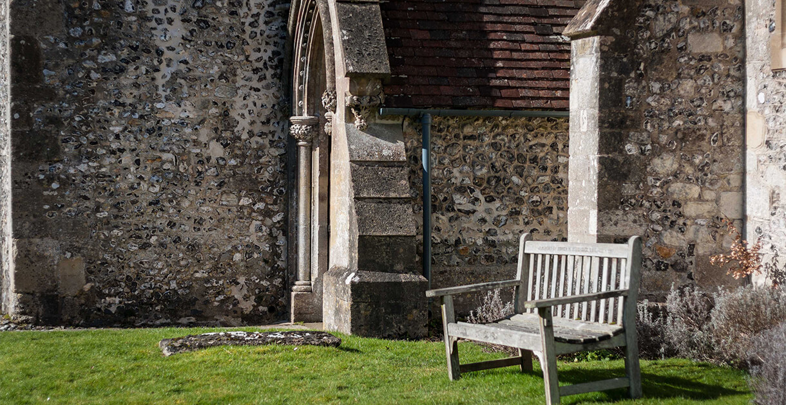
- 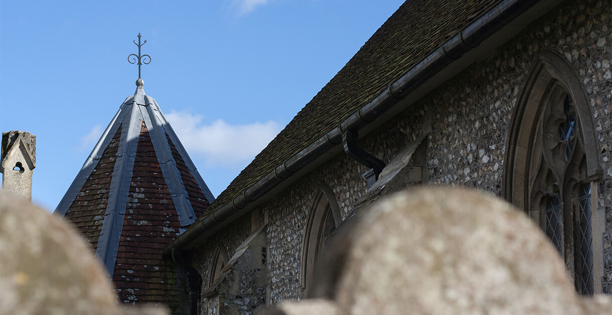
- 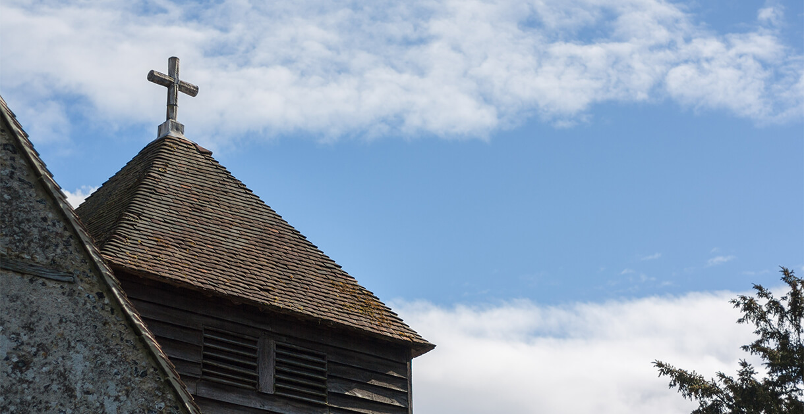
- 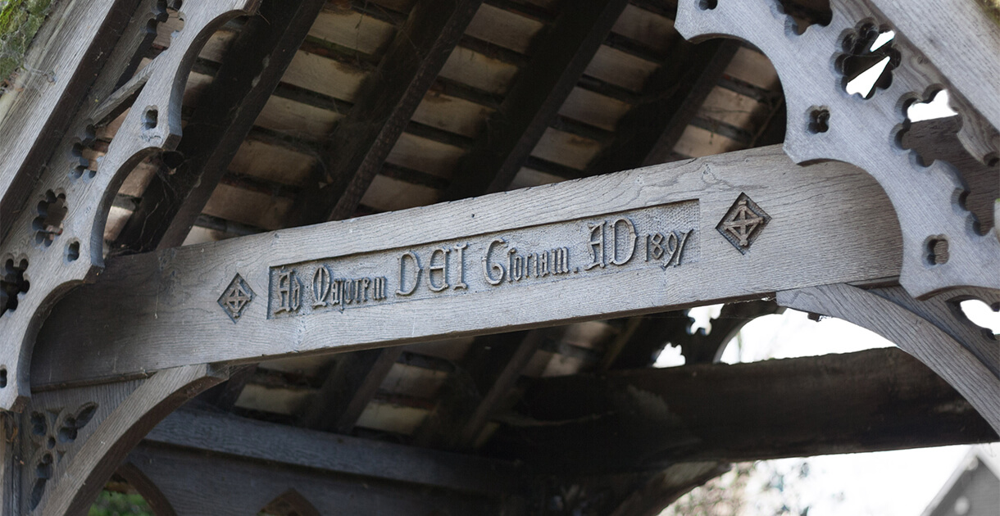
- 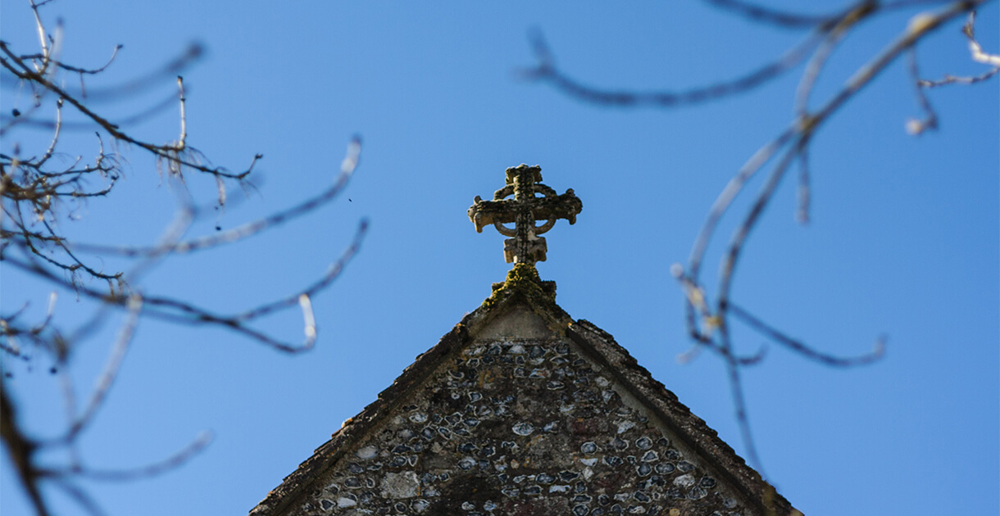
- 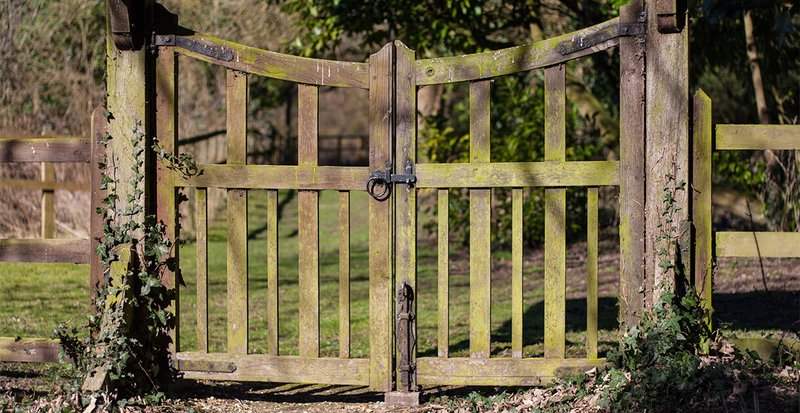
- 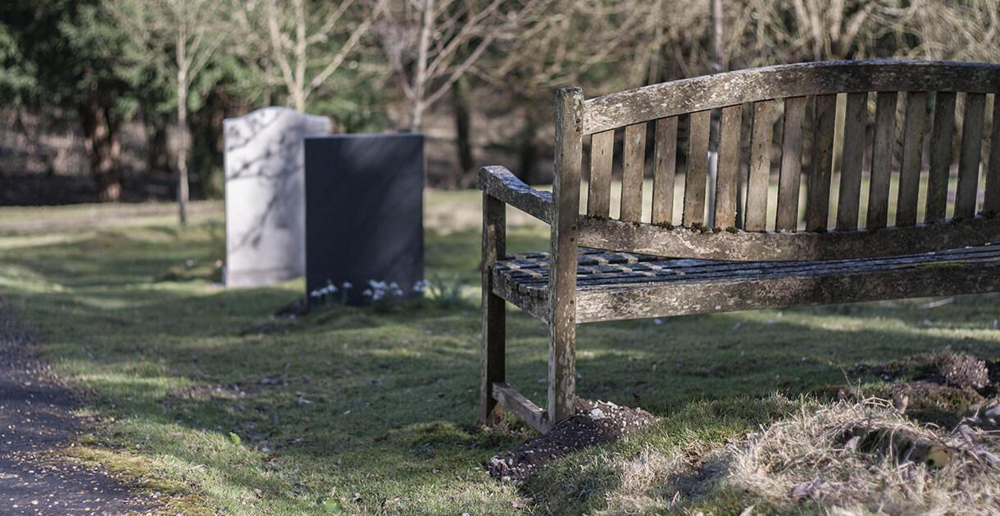

- 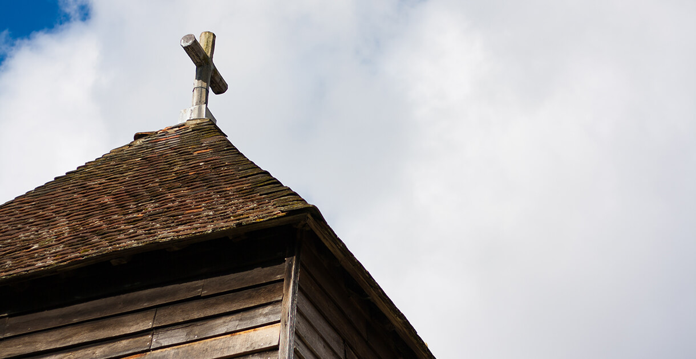
- 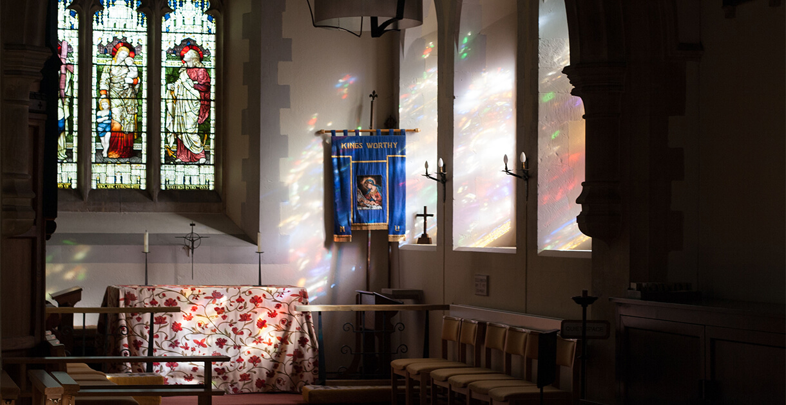
- 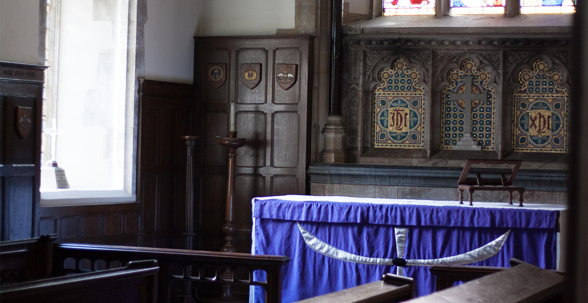
The sites had a similar look and feel, and we figured a unique graphic or logo could help them stand out without moving too far off the “family identity”.
Development
Our client was happy with well documented code over a complex content management system, and the sites were therefore developed as static sites on top of this boilerplate. The client suggested dynamic content on Facebook, while keeping the site as a static presence and a source of information and history.
In order to easily collaborate and share code, we set up two Git repositories for the sites. This would allow us to work simultaneously and do code reviews without having to send files over Dropbox, email or any other messaging-service. You can explore the StMary repository and the StSwithuns repository on GitHub.
In order to keep the code maintainable and sane, we defined upfront Sass variables to easily maintain and edit complex content, like fonts and background images in order of appearance:
$primary: 'Times', serif;
$secondary: 'Times', serif;
$sans: 'Source Sans Pro', sans-serif;
$bck: url('../img/01.jpg')
url('../img/02.jpg')
url('../img/03.jpg')
url('../img/01.jpg')
@for $i from 1 through length($bck)
.image:nth-of-type(#{$i})
background-image: nth($bck, $i)
The site is shipped with a complete document on how to change layouts, styles, and how to add and remove content.
Final outcome
We developed three websites in total: StMarys, StSwithuns and a portal page to serve as a hub for the churches of King’s Worthy. The portal page is developed with growth in mind, and can virtually link to countless websites by aligning content vertically or horizontally — as can be seen on the transition from desktop to mobile view.
Reflection and conclusion
I’m happy with the outcome of this particular project, but I had hoped for a challenge in PHP and content management systems. However, as our client requested static websites, we spent more time making it personal by taking new pictures and tailoring the content to fit our vision instead.
If we were to continue this project, I believe we could do a lot to optimise the performance of the websites — in our code, as well as in the server-side configurations. I have grown fond of Jekyll, and I believe it could have been a viable solution for these websites as well. Other alternatives could have been Middleman and Wintersmith, as they are very similar to Jekyll. Jekyll and Middleman run on top of Ruby, and Wintersmith is built on top of Node.js. I also believe Squarespace could have been a viable option, but this is assuming our client could provide the budget for it.
Overall, I believe we created a suitable product for our client’s needs and demands, covering every aspect of the brief — with room for growth and expansion.